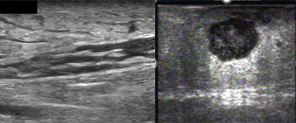

16.1 Soft Tissue Infection & Abscess
POCUS distinguishes cellulitis from abscess more accurately than clinical exam alone (Sn ~87%, Sp ~97%), directly affecting the decision to I&D vs. antibiotics alone.
Cobblestone Pattern
Subcutaneous edema in cellulitis: lobular pattern of hyperechoic fat separated by anechoic fluid. No discrete collection. = Cellulitis: antibiotics, no I&D.
Abscess Cavity
Discrete fluid-filled cavity, internal echoes (pus/debris), posterior enhancement, rim hyperemia on Color Doppler, irregular walls. = Abscess: I&D indicated.
Necrotizing Fasciitis
Air within fascial plane: hyperechoic foci with ring-down artifact (“dirty shadowing”) along fascia. Fluid along fascial plane. CT for extent. POCUS finding = emergent surgical consultation.
Foreign Body
Hyperechoic structure with posterior shadow (metal, glass) or ring-down (air track). Soft tissue edema halo. Linear probe, highest frequency available.

Left: cellulitis — cobblestone subcutaneous edema pattern, no discrete collection. Right: abscess — discrete hypoechoic cavity with irregular walls and posterior enhancement.
16.2 Musculoskeletal Applications
| Application | Finding | Technique Notes |
|---|
| Long Bone Fracture | Cortical disruption (step-off), periosteal hematoma. Sensitivity ~85–90% for rib and long bone fractures. | Linear probe, slide along bone cortex. Hematoma at fracture site is first sign. |
| Knee Joint Effusion | Anechoic fluid in suprapatellar recess. Normal: <4 mm. Effusion: anechoic or echogenic (hemarthrosis) above patella. | Knee flexed 30°. Compress lateral gutters to move fluid to suprapatellar pouch. |
| Tendon Injury (Achilles, patellar) | Partial tear: focal hypoechoic defect. Complete: full discontinuity, hematoma at gap. | Heel-toe technique to maintain perpendicular angle (avoid anisotropy artifact). |